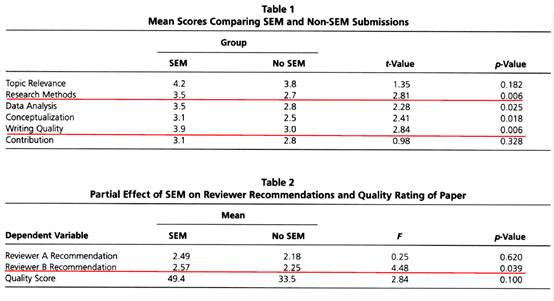
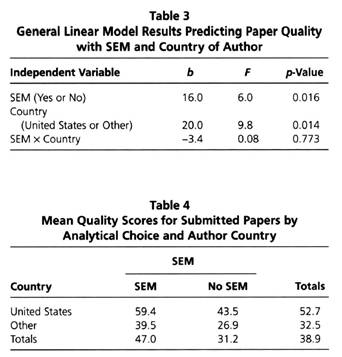

收录于合集
文献来源：
Babin,Barry J., J. F. Hair, and J. S. Boles. “Publishing Research in MarketingJournals Using Structural Equation Modeling.” Journal of Marketing Theory &Practice 16.4(2008):279-285.三位作者均为市场营销和社会科学研究方法领域的顶尖学者，他们的著作深刻地影响了当代社会科学研究方法，经典教材“Multivariate data analysis”（《多元数据分析》）已经在中国出版。
研究背景：
目前，结构方程模型（Structural Equation Modeling , SEM）已经被广泛运用于社会科学的各个学科，原文作者所在的市场营销领域也不例外。直观可见，使用定量研究方法的稿件会得到审稿人的更多青睐，而无论是模型精度还是解释力度，SEM都是定量方法中的翘楚。换言之，一般认为，使用SEM可以大大提高投稿的命中率。因此，越来越多的研究者开始学习和应用SEM。然而，部分学者也对这一现象提出批评。他们尖锐地指出，SEM比普通定量方法的门槛更高，许多审稿人本身并没有熟练地掌握SEM，因此在面对相关稿件时完全无法提出合理的批评意见。为了掩盖自己的无知，某些审稿人会选择将使用SEM的文章全部放行。因此，有舆论认为，SEM逐渐成为投稿人“欺负”审稿人，乃至欺骗读者的凶器。对此，作者渴望调查和分析核心期刊投稿与录用的实际情况，考察SEM方法及相关因素对文章质量和投稿命中率的影响。
研究假设：
首先，本文的核心问题非常清晰，即SEM模型的使用会不会直接影响投稿命中率。如果影响确实存在，那么审稿人是否真的只被SEM这种方法外观吸引，还是说SEM确实提高了文章质量？作者推测，相比之下，不使用SEM的文章更容易被审稿人拒绝 （假设 1 ） ；使用SEM的文章在审稿人评价中表现更好 （假设 2 ） ；即使控制了研究方法得分等一系列因素，SEM依然能够提升文章的总体评价。 （假设 3 ）
其次，如何运用SEM也值得关注。有舆论认为，SEM软件的使用存在明显的分野。Lisrel代表了最为正统的SEM方法，而简单易学的AMOS则吸引了更多零基础用户。因此，类似于“R→STATA→SPSS”中的鄙视链，Liseral用户常常嘲笑AMOS的可视化操作。而这种歧视很可能已经扩散到审稿人中。因此，作者推测，相比其他SEM软件，使用AMOS的文章更容易被拒稿。 （假设 4 ） 此外，SEM对模型拟合度的要求要远高于普通定量方法，而且明文规定的指标也更多，很多学者都为提高拟合度殚精竭虑，甚至不惜牺牲理论的完整性和假设的统一性。因此，作者推测，文章中SEM拟合越好，投稿命中率就越高。 （假设 5 ）
最后，美国本土是世界定量方法的滥觞，也是SEM精英最为集中的地方。换言之，其他国家SEM发展和应用的速度要落后美国若干年甚至数十年。因此，作者推测相比之下，美国学者运用SEM更为频繁 （假设 6 ） ；而美国学者用SEM写出的文章质量也会更高。 （假设 7 ）
研究方法：
作者的研究材料直接来源于核心期刊的审稿记录。对于每一篇来搞，作者都记录下它的研究方法、审稿人评价（包括评分表和具体审稿意见）、是否应用了SEM、使用了何种软件、投稿人是否为美国籍等详细信息。作者对所有审稿意见进行了内容分析，提炼出文章的总体得分情况。对于假设1、假设4和假设6，作者对是否使用SEM/是否使用AMOS/是否为美国籍和是否拒稿/是否拒稿/是否使用SEM两两构建了简单的交叉列表。对于假设2，作者则对SEM组和非SEM组的得分均值进行了t检验。对于假设3和假设7，作者以文章质量为因变量，以是否使用SEM和是否为美国籍为虚拟变量进行了多元回归。对于假设5，作者同样使用了多元回归。
研究结果：


如图所示，作者得出结论：
-
SEM的应用已经十分广泛，作者研究的样本中有近半数文章使用了SEM。
-
SEM确实提高了投稿命中率。
-
结论2的出现并不能说明审稿人偏心于SEM，因为SEM事实上显著提高了文章质量。
-
操作软件不会显著影响投稿命中率，而模型拟合度也不会显著影响文章质量。
-
SEM为文章带来的增益效果对美国籍和非美国籍学者都是相当。
编后记：
如同原文发表时的美国，现今国内也充斥着对SEM的不同声音。支持者把它看作定量方法的一场革命，反对者则将其斥为换汤不换药的奇技淫巧。无可否认，确实有人通过精巧的模型来掩盖自己理论的苍白，也确实有人通过贩卖二手知识来哗众取宠。但我们也应当看到，越来越多的研究者在勤奋踏实地学习和应用科学方法，试图追赶领先了数十年的西方学界，从而让世界社会科学中出现更多中国声音。无论定量还是定性，为人类知识做出贡献的研究都值得肯定与尊重。无论SEM还是传统方法，适合研究目的的工具就值得传承与发扬。
**
**
政观编辑部